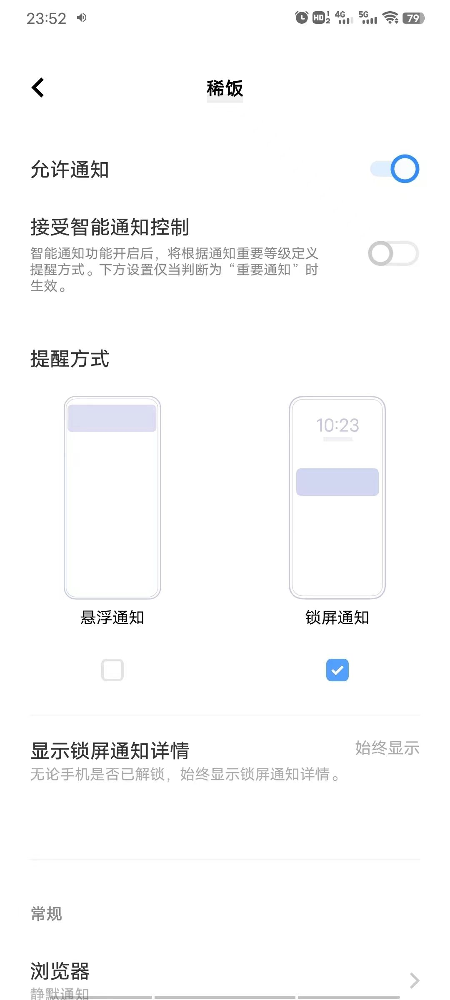
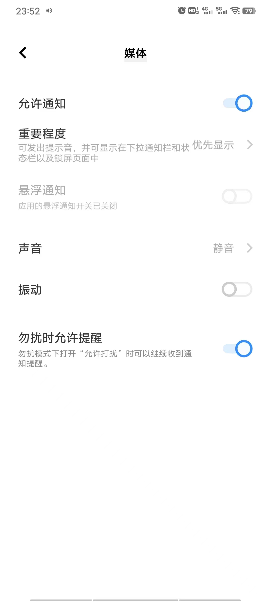

产品说明：
1. 官网：https://akang1937.github.io/Xifan
2. 特色功能：
多开账号
自动切号
全天候循环操作
文案重复自动纠错
操作频繁智能处理
云端备份/恢复账号
可随机文案
自动发推特
转载
评论
点赞（内、外）
发超话
楼中楼评论
3. 可用设备：安卓手机，苹果电脑，windows电脑。// ios因苹果政策限制，暂不可用。
4. 运行环境：前台运行，后台运行，锁屏运行都可以。//
手机端需要将稀饭App设置为“允许后台运行”，并将稀饭App加入后台白名单。
5. 优势：安全！稳定！不被盗号！ 全天候循环操作，智能处理文案重复、操作频繁的情况，再也不用守着设备啦！
使用说明
1. 注册账号：输入账号和密码，点击注册即可注册账号。
2. 激活账号：联系客服，获取打赏码，复制到打赏码输入框内，点击激活即可。
3. 绑定设备：每个（稀饭）账号都是绑定设备的。在设备上登录账号后，一旦激活就会绑定该设备。
4. 换绑设备：在新设备上登录（稀饭）账号，重新激活，即可换绑到新设备。// 年赏用户如需换绑设备，可联系客服免费获取打赏码重新激活。
5. 账号恢复：登录的账号会自动备份到云端，如果重新安装、或换绑设备，账号会自动恢复。
6. 自动切号：为用户账号安全起见，默认每次自动切5个号后，会自动停止操作，关闭开关。【如果启动循环功能，并设置循环休息时间后，将不再自动停止】
7. 绑定账号：每个稀饭（账号）基础绑号数量是10个。现阶段，我们不鼓励用户登录太多账号。【如果用户非要登录很多账号，可联系客服，申请更多绑号数量】
8. 文案类型：有两种基础文案输入方式。
(1) 固定文案+数字变量，格式比如：A{0++}
(2) 随机文案，格式比如：{A|B|C|D|E|F|G}
随机文案也可以同时输入多组文案池，格式比如：{A|B|C|D|E|F|G}{H|I|J|K|L|M|N}
两种基础文案输入方式也可以组合使用，格式比如：{A|B|C|D|E|F|G}{0++}
PS: 每个字母都可以替换成一段文字，但是要特别注意，文字中不能带英文标点符号和换行符。
PS: 随机文案的文案数量，没有限制，上述格式中为了方便只设置了7个文案。
9. 发超话：点【增强】，在增强页面的【超帖】输入框中设置文案，且必须在文案最前面加上超话词条，例如：#每日一善[超话]#。再点击启动按钮。
10. 发楼中楼评论：
1.先用一个wb账号发一条评论。
2.在稀饭中，保持wb页面为wb首页。
3.在稀饭中，切换到这个wb账号。
4.点【增强】，在增强页面的【楼中楼】输入框中设置文案。再点击启动按钮。
11. 全天候循环：点击【增强】，设置休息时长，启动循环功能后，自动切号将不再中途停止，而是变为从第一个号一直切到最后一个号。最后一个号操作完毕后将会暂停。休息一段时间后，将会自动切回第一个号，开始新一轮的操作。
注意：开启循环功能后，一旦打开开关，循环操作将不会停止，除非手动关闭开关。
12. 文案重复自动纠错：如果因为偶尔的操作失败，导致文案重复无法继续操作时，会自动纠正文案，确保操作不会中断。
13. 操作频繁智能处理：如果遇到操作频繁的情况，当前账号的操作会自动停止，避免账号收到伤害。到达切号时间后，会继续切到下一个号，继续执行操作。
14. 特别注意：
发推特、转载、评论、超话的最小间隔时间为5秒，点赞的最小间隔时间为1秒；
要更换账号，必须先删除旧账号，再点击【添加下个账号】，登录新账号。
如果有账号退出登录状态了，务必删除空号，再点击【添加下个账号】，登录新账号。否则，会导致稀饭使用异常！！！
手机端设置方法：
小米手机：
设置允许后台活动：桌面上长按稀饭图标 —— 应用信息 —— 省电策略 —— 无限制
华为/荣耀手机：
设置允许后台活动：手机管家 —— 应用启动管理 —— 稀饭 —— 关闭右侧的开关（关闭智能管理）—— 点击稀饭项 —— 允许后台活动
设置允许休眠期间保持网络连接：手机设置 —— 电池 —— 更多电池设置 —— 打开允许休眠期间保持网络连接
设置取消电池优化：手机设置 —— 搜索“电池优化” —— 点击稀饭项 —— 设置为不允许
oppo手机：
设置允许后台活动：手机设置 —— 电池 —— 应用耗电管理 —— 稀饭 —— 允许完全后台行为
关闭睡眠待机优化：手机设置 —— 电池 —— 智能省电场景 —— 关闭睡眠待机优化
设置稀饭通知权限：桌面上长按稀饭图标 —— 应用信息 —— 通知管理 —— 【按照下面的截图设置】
vivo手机：
设置允许后台活动：手机设置 —— 电池 —— 后台高耗电管理 —— 稀饭 —— 允许后台高耗电
（如果有睡眠模式的话）关闭睡眠模式：手机设置 —— 电池 —— 关闭睡眠模式
设置稀饭通知权限：桌面上长按稀饭图标 —— 应用信息 —— 通知管理 —— 【按照下面的截图设置】


答疑：
1. 手机端后台或息屏运行不正常？
请按照【手机端设置方法】，按照您的手机品牌做好对应的设置。
2. 已经设置好了，为什么不执行自动操作？
设置好之后，务必打开总开关。
3. 打开开关后，有时候不执行自动操作怎么办？
一般在更新后会出现这种情况。要么手动刷新一次wb页面，要么重启一下稀饭，都可以解决问题。
4. 为什么稀饭总是切几个号就停了？
稀饭默认自动切5个号就会停止操作。如果希望稀饭持续运行不终止，请启动循环功能，并设置循环的休息时间，再重新打开开关运行即可。
5. 为什么添加新账号后，账号列表不显示账号id，而是显示【小号】？
手动刷新一下稀饭页面即可。如果手动刷新稀饭页面后，仍然显示【小号】字样，说明该账号已经添加过了，重复添加的账号就不会显示账号id。
6. 点击账号列表没反应，只显示“默认自动切号”怎么办？
打开关闭总开关一次即可。
7. 重新登录稀饭账号后，稀饭页面卡死怎么办？
这是正常情况。重新登录稀饭账号后，需要一点时间恢复您的wb账号，耐心等待账号恢复完成即可。恢复完成后，即可恢复正常。
8. 设置页面显示不正常。
刷新一下即可。
9. 为什么会出现【异常停止】的提示？
有两种可能：
1.网络不稳定或服务器超载造成的。正常来说，等待网络稳定后会自动重启操作。如果没有自动重启操作的话，重新打开稀饭开关运行即可。
2.账号列表中有显示【小号】字样的账号。将这种空号删除，重新打开稀饭开关运行即可。
10. 如果忘记稀饭账号的密码了怎么办？
联系客服，发送您的稀饭账号，告诉客服需要找回密码。客服会将稀饭账号的密码发到您的邮箱中，并通知您。
11. 为什么换了新账号，总是变回旧账号（或退出登录，或开关关闭操作停止）？
要更换账号，先点击删除按钮，删除旧账号。然后再点击【添加下个账号】，登录新账号即可。
比如：你第二个账号登录的是账号A，如果账号A退出了登录，你要重新登录账号A，可以直接登录。但是如果你想换成账号B，必须先删除第二个账号。然后点击【添加下个账号】，新开一个账号位置再登录新号。
如果不幸遇到这种情况，请先删除退出登录状态的号，然后然后再点击【添加下个账号】，登录新账号即可。
帮助文档